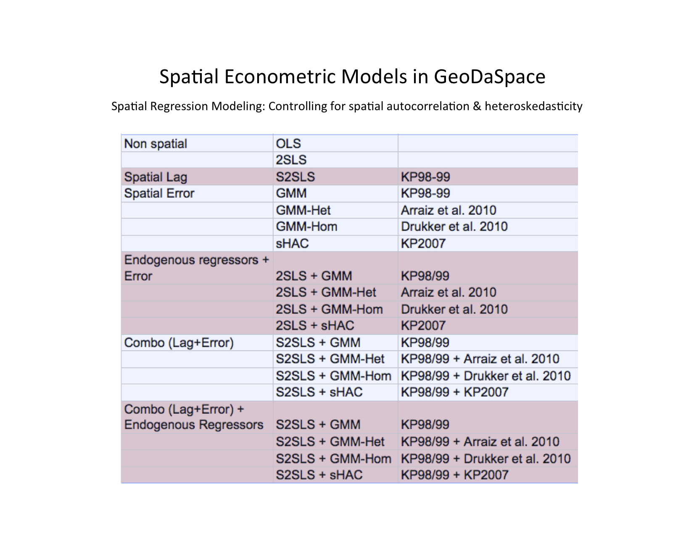
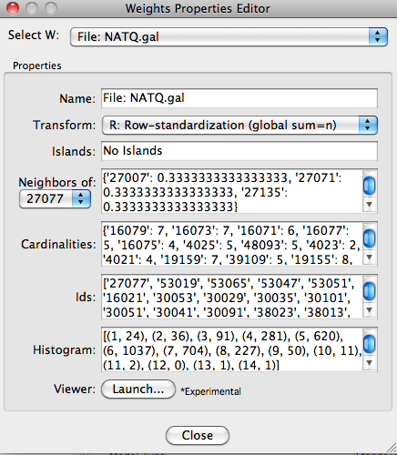
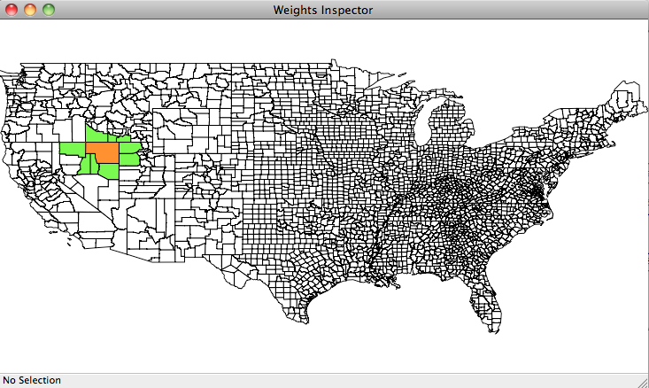
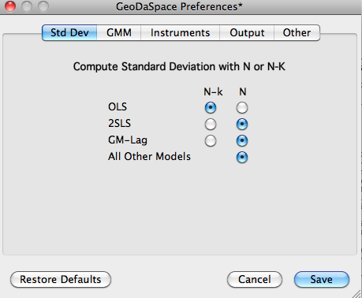
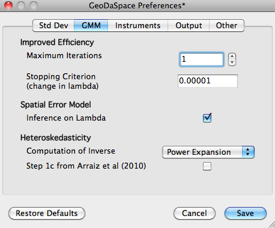
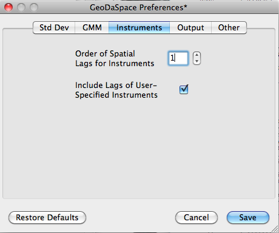
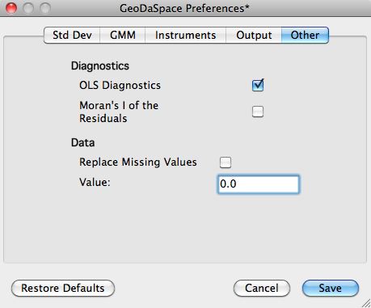

GeoDaSpace is stand-alone program based on PySAL's spatial econometrics code (spreg API). It is available for Windows and Mac OSX. The current release is an alpha release.
Models in GeoDaSpace
The following models that control for both spatial autocorrelation and heteroskedasticity are available in the GeoDaSpace alpha release based on these recent references :
• OLS
• 2SLS
• GM/GMM spatial error
• GM/GMM spatial lag
• GM/GMM spatial lag and error
with options for:
• spatial and non-spatial diagnostics
• non-spatial endogenous variables
• heteroskedasticity/HAC
and these spatial weights:
• contiguity
• distance (bands, knn, inverse distance)
• kernel
|  |
Graphical User Interface (GUI)
These model options can be selected through a graphical user interface after specifying a dataset, variables (Y, X, and if needed instruments (YE) and spatial regimes or subregions (H)):
 |
Output Example
An example of GeoDaSpace's spatial regression results:
 |
Spatial Weights Editor
This editor provides an overview of the properties of spatial weights:
|  |
Spatial Weights Map
Mousing over an area in the spatial weight map selects this area (orange) and its neighbors (green) as defined by the spatial weights matrix.
|  |
Preferences 1
The following screenshots illustrate the variety of preference options available in GeoDaSpace:
|  |
Preferences 2
|  |
Preferences 3
|  |
Preferences 4
 |
Preferences 5
|  |
References
Harry H. Kelejian and Ingmar R. Prucha. A Generalized Spatial Two-Stage Least Squares Procedures for Estimating a Spatial Autoregressive Model with Autoregressive Disturbances. Journal of Real Estate Finance and Economics, 17, 1998, 99-121.
Harry H. Kelejian and Ingmar R. Prucha. A Generalized Moments Estimator for the Autoregressive Parameter in a Spatial Model. International Economic Review, 40, 1999, 509-533.
Arraiz I, Drukker DM, Kelejian HH, Prucha IR (2010). “A Spatial Cli?-Ord-type Model with Heteroscedastic Innovations: Small and Large Sample Results.” Journal of Regional Science, 50, 592–614.
David M. Drukker, Peter Egger, and Ingmar R. Prucha, (April 27, 2010). On Two-step Estimation of a Spatial Autoregressive Model with Autoregressive Disturbances and Endogenous Regressors. Available here.
Kelejian HH, Prucha IR (2007). “HAC Estimation in a Spatial Framework.” Journal of Econometrics, 140, 131–154.
Support
The Openspace listserv supports technical questions about CAST.
Contact
Questions? Contact us.